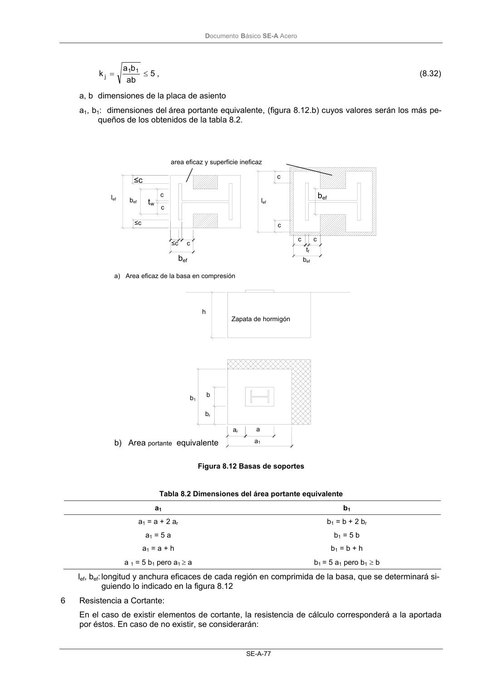

DB-SE-A Acero · edición 2007-10-23 · capa oficial
Documento DB-SE-A-oficial · SHA-256 del PDF 9ed9ea694aabfbda3bfbbef40dfe9223fde05d13c35bc2ba9751e5a96a22a64f
Página física 79 de 168.
Copia fiel del PDF fuente · Fuente oficial
Ficha de la disposición en la fuente oficial
Formato: Texto de la página (Markdown)
Documento Básico SE-A Acero SE-A-77 5 ab b a k 1 1 j ≤ = , (8.32) a, b dimensiones de la placa de asiento a1, b1: dimensiones del área portante equivalente, (figura 8.12.b) cuyos valores serán los más pe- queños de los obtenidos de la tabla 8.2. Figura 8.12 Basas de soportes Tabla 8.2 Dimensiones del área portante equivalente a1 b1 a1 = a + 2 ar a1 = 5 a a1 = a + h a 1 = 5 b1 pero a1 ≥ a b1 = b + 2 br b1 = 5 b b1 = b + h b1 = 5 a1 pero b1 ≥ b lef, bef: longitud y anchura eficaces de cada región en comprimida de la basa, que se determinará si- guiendo lo indicado en la figura 8.12 6 Resistencia a Cortante: En el caso de existir elementos de cortante, la resistencia de cálculo corresponderá a la aportada por éstos. En caso de no existir, se considerarán: Zapata de hormigón ≤c ≤c ≤c c c c bef bef c c tw bef lef bef c c lef tf h b1 b br a ar a1 a) Area eficaz de la basa en compresión b) Area portante equivalente area eficaz y superficie ineficaz

Datos candidatos: compruebe celdas y notas en el PDF.